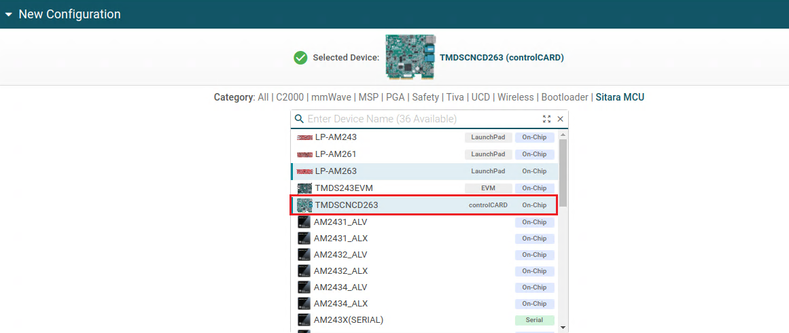
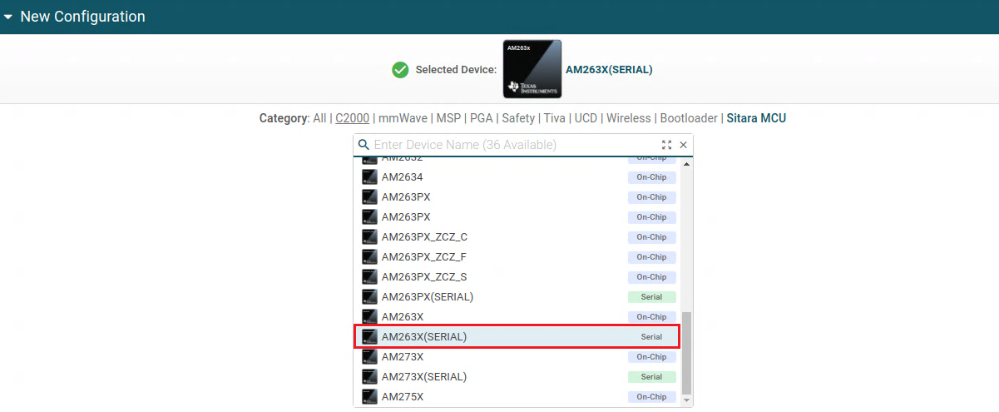

Introduction
TI UniFlash Tool is a software utility designed for programming "On-chip" and "External flash" memory on TI microcontrollers and wireless connectivity devices. Sitara MCU devices now support TI Uniflash tool for loading or flashing images into the Target. Uniflash offers both graphical and command-line interfaces. This document provides a comprehensive guide on how to use UniFlash for flashing Sitara MCU devices.
Download and Install Uniflash
- Note
- The steps on this page need to be done once on a given host machine
- The TI Uniflash download home page is, https://www.ti.com/tool/UNIFLASH
- Download the latest version 8.6.0
- Install at below path,
- Windows, C:/ti
- Linux, ${HOME}/ti
- Launch the Uniflash Application
Launching a Session
To perform flash operations on your device, you must initiate a flash session tailored to the specific device. Here are multiple ways to start a new session:
- Auto Detect
- When connecting a board, UniFlash automatically chooses the appropriate connection for you. Auto-detect uses JTAG serial to recognize the device. If you start the session using auto detect, JTAG connection is automatically selected for the session.
- Board or Device/Connection Combination
- You can manually select your device by choosing Sitara MCU filter and selecting your device and connection type.
- JTAG connection type is selected by default if you choose your device with on-chip type.

New JTAG Configuration
- Use the device name ending with (Serial) to initiate a serial (UART) flashing session. In this case, the serial connection is automatically selected.

New Serial Configuration
- Select the correct part number to use a different connection. If you select the device by board name, the default connection type will be automatically selected for you.
- Loading a Previously Saved Session
- Loading a saved session restores your prior selections, including device, connection, and settings. If you haven't saved a session in Uniflash before, this tab will not be visible.

Recent Session Selection
- Selecting a CCXML File Created by CCS/Uniflash
- This option is useful when you already have the configuration settings in the CCXML file.

New CCXML Configuration
After setting up one of the above session launch type, Click the Start button to launch the new session.
Programming the Device
JTAG Session
- Set the board in DEVBOOT MODE mode and do a power cycle prior to loading.
- Choose a Program to Flash:
- Click the "Browse" button to select the program you want to flash.
- The default start address is automatically filled. UniFlash requires the full address since flash offsets are not supported.
- Flash Address Table:
- The table below shows the flash addresses accepted by the ROM/SBL to load programs onto the target:
| Program | Start Address |
| SBL | 0x60000000 |
| Application | 0x60080000 |
- Edit the application offset field only, if your sbl is configured with custom application offset
- Initiating Programming:
- After clicking "Load Image," UniFlash starts the programming process, and the console displays a log of each operation. [SUCCESS] Program Load completed successfully will get printed in the console, if the program loads into the target successfully.
Serial (UART) Session
- Set the board in UART BOOT MODE mode and do a power cycle.
- Enter the appropriate COM Port and select the board type. Make sure the UART port used for terminal is identified as mentioned in Setup UART Terminal

COM Port Selection
- Choose a Program to Flash:
- Click the "Browse" button to select the program you want to flash. Serial Uniflash session supports three binary image formats - SBL, application image, XIP application image. It is not necessary to have three images in order to carry out the operation.
- The SBL and application image flash offsets are handled internally based on the device's SBL configuration.
- Change the application offset from the settings. This step is only needed if you are using sbl with custom application offset.

Custom Application Offset
- Initiating Programming:
- After clicking "Load Image," UniFlash starts the programming process, and the console displays a log of each operation. [SUCCESS] Program Load completed successfully will get printed in the console, if the program loads into the target successfully.
Custom Flash Support
- JTAG
- Please use Uniflash Custom Flash Writer guide to build the flasher app and input the path of the .out file in the tool. The custom flasher input field is found at Settings & Utilities page.

JTAG Custom Flash writer
- Serial
- Please build the existing SBL UART Flash Writer application using your custom flash configuration. Then, input the file path for the .tiimage in the tool. The custom flasher input field is found at Settings & Utilities page.

UART Custom Flash writer
Existing Limitations
- If the flashing operation hangs in the serial session, the Cancel button will be unresponsive. To resolve the issue, close uniflash, relaunch it, and ensure that your board selection and flash configurations are correct.
Issues with flashing applications > 1MB in serial session
- To resolve this, go to the serial flasher script located at
C:/ti/uniflash_9.1.0/deskdb/content/TICloudAgent/win/ccs_base/sitara_mcu/serial/FlashPython.py
- Modify line 288 to include an argument "optype" while calling create_temp_file
tempfilename = create_temp_file(filename, offset, optype)
Troubleshooting
- If the default flashing algorithm that comes with Uniflash is not working for you, you can try using the one that comes with the SDK.
- You can find the prebuilt flashers at the following location:
<MCU_SDK_ROOT>\tools\flasher\prebuilt
- To use the flasher packaged with the SDK, you can either enter the path in the custom flasher field or replace the Uniflash flasher directly from the below path:
<uniflash_root>deskdb\content\TICloudAgent\win\ccs_base\sitara_mcu\flasher
Supported File Formats
When loading a file to flash or RAM, UniFlash supports the following formats:
- TI COFF
- TI ELF
- Intel Hex
- Motorola S-Record
- Tektronix Hex
- TI-TXT
- Binary (.mcelf, .mcelf.hs, .mcelf.hs_fs, .tiimage)
When saving memory to a file, UniFlash supports the following formats:
Memory Browser and Memory Export
- The Memory View in UniFlash allows you to browse the target memory quickly. Please note that this view is read-only.
- To read the RAM memory without clearing the data on refresh, keep the "Remain Connected after operations" option ticked as shown.
- To export a range of memory, follow these steps:
- Use the Memory View to select the desired memory range.
- Click the "Export" button.
- Choose either a binary (.BIN) file or a COFF (.out) file for export. The COFF format enables the export of multiple memory sections.
Additional Information
This documentation provides an overview of the TI UniFlash Tool's key features and usage for Sitara MCU devices. Refer to the tool's official documentation for more detailed instructions and troubleshooting information. TI Uniflash Quick Start Guide
 1.8.20
1.8.20